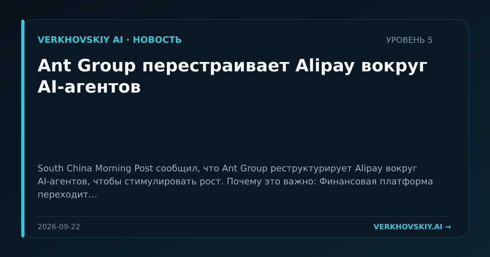

Ant Group перестраивает Alipay вокруг AI-агентов
South China Morning Post сообщил, что Ant Group реструктурирует Alipay вокруг AI-агентов, чтобы стимулировать рост. Почему это важно: Финансовая платформа переходит от набора сервисов к агентной организации пользовательских действий. Это меняет разделение труда между приложением, пользователем и поставщиками услуг внутри экосистемы.